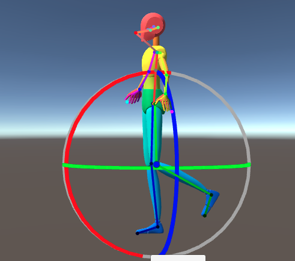

Rotation Gizmo
Interactive 3D rotation tools for precise joint manipulation and pose adjustment.
Overview
The rotation gizmo allows the user to directly rotate the selected joint.

https://github.com/HiddenMonk/Unity3DRuntimeTransformGizmo The runtime transform gizmo of this project uses the above plugin by HiddenMonk. SetTarget is mainly used to get the current target for the gizmo. There are also modifications made to TransformGizmo.cs for this project.
Related Classes
Poser Documentation: SetTarget Poser Documentation: TransformGizmo